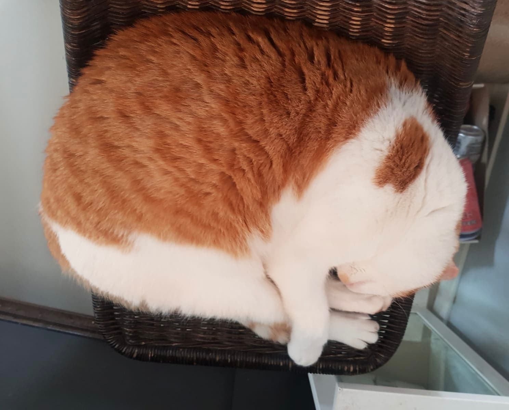
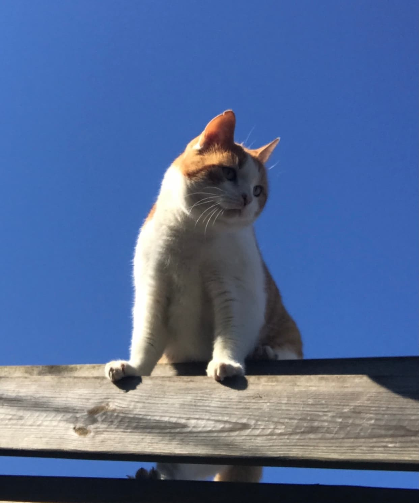

Fun Facts
Likes & dislikes van Broes
Likes
 Mensen; Broes is een allemansvriendje. Hij houdt erg van mensen om zich heen en van aandacht. Het liefst wordt hij de hele tijd geknuffeld en geaaid. Behalve als ie slaapt... dan kan je hem beter laten slapen.
Slapen; Net als de meeste katten heeft Broes veel slaap nodig. Hij is dan ook het grootste gedeelte van de dag bezig met slapen. Hij kan overal in slaap vallen, van de bank en een bed tot de meest oncomfortabele plekken.
Eten; Broes zijn favoriete ding om te doen is eten. Het liefst eet hij vis, en vooral zalm en koolvis zijn z’n favorieten. Ook houdt hij van blikjes vlees en brokjes. Hij eet ook graag menseneten, zoals yoghurt, kaas en boontjes.
Drinken; Net als eten is Broes gedurende de dag veel aan het drinken. En voor Broes geldt; hoe viezer het water, hoe liever hij het drinkt. Zijn favoriete water is regenwater, opgevolgd met water wat wordt gebruikt om de afwas mee om te spoelen. Onderaan zijn lijstje staat zijn normale drinkwater.
Klimmen & buiten zijn; Broes is een echte buitenkat. Het liefst is hij zoveel mogelijk buiten. Hij houdt ervan om in het zonnetje te liggen en in het gras te rollen, kleine insecten te vangen, en over hekken heen te klimmen.
Dislikes
Teveel mensen; ook al houdt Broes van gezelschap, liever heeft hij niet teveel mensen om zich heen. Dan wordt het al snel teveel voor hem en gaat hij liever naar buiten.
De dierenarts; Broes z’n minst favoriete plek om te zijn is de dierenarts. Hij krijgt als PTSD als hij het mandje ziet waarin hij naar de dierenarts gebracht wordt. Het liefst zou hij nooit meer naar de dierenarts gaan.. maar helaas is het nodig.
Lang wachten op eten; waar Broes ook niet tegen kan is als hij te lang moet wachten op zijn eten. Dan wordt hij ongeduldig en kan hij flink gaan mauwen.
Nog een feitje
Je bent de naam Broes zeker nog niet eerder tegen gekomen. ‘Broes’ komt van de uitspraak ‘Broezen’, die uit Groningen komt. Een ‘Broes’ betekent ook wel een douche- of gieterkop, of trechter. FYIs, hier kwamen we pas achter nadat we Broes zijn naam hadden gegeven.